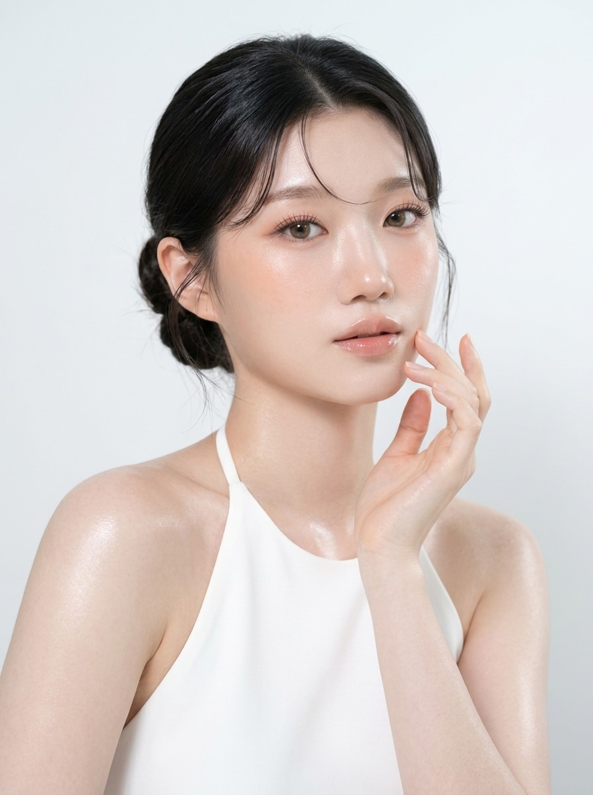

KUSAM
KERING
TEKSTURKASAR
NODA
Masalah kulitnumpuk?

10XGLOW BOOSTING EFFECT
Hada Hydra GlowGlow Jelly Serum
Bantu haluskan tekstur
Bantu jaga kelembapan
Kulit tampak glowing
Checkout di keranjang kuning